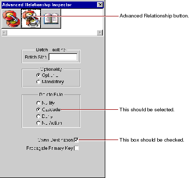

Table of Contents
Table of Contents  Next Section
Table of Contents
Next Section
Table of Contents  Previous Section
Previous Section

If the wizard created relationships for you, the relationship's delete rule should already be set to Cascade. You specified this in the wizard. If you created your relationships by hand, you'll have to set the delete rule yourself.
As with the delete rule, if the wizard created relationships for you, the relationship's Owns Destination box should already be checked. If you created your relationships by hand, you'll have to check this box yourself.
A relationship that propagates its primary key propagates its key value to newly inserted objects in the destination of the relationship. In this case, checking the Propagate Primary Key box means that if you create a new MovieRole and add it to a Movie's list of MovieRoles, the Movie object automatically assigns its movieId value as the value for the new MovieRole's movieId property.
This option is usually used with relationships that own their destination. For more information on propagates primary keys, see Where Do Primary Keys Come From?.
Table of Contents Next Section